- After studying the chapter, you will be able to:
- Describe the integumentary system and the role it plays in homeostasis
- Describe the layers of the skin and the functions of each layer
- Describe the accessory structures of the skin and the functions of each
- Describe the changes that occur in the integumentary system during the aging process
- Discuss several common diseases, disorders, and injuries that affect the integumentary system
- Explain treatments for some common diseases, disorders, and injuries of the integumentary system
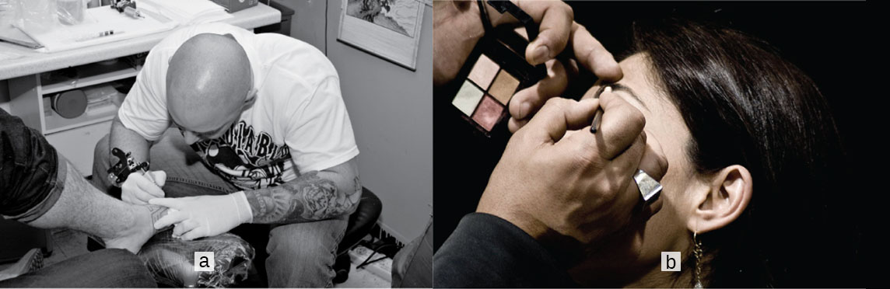
- Identify the components of the integumentary system
- Describe the layers of the skin and the functions of each layer
- Identify and describe the hypodermis and deep fascia
- Describe the role of keratinocytes and their life cycle
- Describe the role of melanocytes in skin pigmentation
Although you may not typically think of the skin as an organ, it is in fact made of tissues that work together as a single structure to perform unique and critical functions. The skin and its accessory structures make up theintegumentary system, which provides the body with overall protection. The skin is made of multiple layers of cells and tissues, which are held to underlying structures by connective tissue (Figure \(\PageIndex{1}\)). The deeper layer of skin is well vascularized (has numerous blood vessels). It also has numerous sensory, and autonomic and sympathetic nerve fibers ensuring communication to and from the brain.
![This illustration shows a cross section of skin tissue. The outermost layer is called the epidermis, and occupies one fifth of the cross section. Several hairs are emerging from the surface. The epidermis dives around one of the hairs, forming a follicle. The middle layer is called the dermis, which occupies four fifths of the cross section. The dermis contains an erector pilli muscle connected to one of the follicles. The dermis also contains an eccrine sweat gland, composed of a bunch of tubules. One tubule travels up from the bunch, through the epidermis, opening onto the surface a pore. There are two string-like nerves travelling vertically through the dermis. The right nerve is attached to a Pacinian corpuscle, which is a yellow structure consisting of concentric ovals similar to an onion. The lowest level of the skin, the hypodermis, contains fatty tissue, arteries, and veins. Blood vessels travel from the hypodermis and connect to hair follicles and erector pilli muscle in the dermis.](images/ch5/fig5-2-this-illustration-shows-a-cross-section-.jpg)
Figure \(\PageIndex{1}\):Layers of SkinThe skin is composed of two main layers: the epidermis, made of closely packed epithelial cells, and the dermis, made of dense, irregular connective tissue that houses blood vessels, hair follicles, sweat glands, and other structures. Beneath the dermis lies the hypodermis, which is composed mainly of loose connective and fatty tissues.
The skin consists of two main layers and a closely associated layer. View thisanimationto learn more about layers of the skin. What are the basic functions of each of these layers?
Theepidermisis composed of keratinized, stratified squamous epithelium. It is made of four or five layers of epithelial cells, depending on its location in the body. It does not have any blood vessels within it (i.e., it is avascular). Skin that has four layers of cells is referred to as “thin skin.” From deep to superficial, these layers are the stratum basale, stratum spinosum, stratum granulosum, and stratum corneum. Most of the skin can be classified as thin skin. “Thick skin” is found only on the palms of the hands and the soles of the feet. It has a fifth layer, called the stratum lucidum, located between the stratum corneum and the stratum granulosum (Figure \(\PageIndex{2}\)).
![Part A is a micrograph showing a cross section of thin skin. The topmost layer is a thin, translucent layer with irregular texture and areas where cells are sloughing off. The deepest layer is dark purple and extends into the third layer with finger like projections. The third light purple layer contains thin bands of fibers and small, dark cells. The fourth, and deepest layer, is darker than the third layer, but is still light purple. It contains thick fiber bands that are loosely packed. Part B is a magnified view of the epidermis of thick skin. It shows the topmost layer is five times thicker than the topmost layer of thin skin. The topmost layer of thick skin is also denser and less translucent than the topmost layer of thin skin.](images/ch5/fig5-3-part-a-is-a-micrograph-showing-a-cross-s.jpg)
Figure \(\PageIndex{2}\):Thin Skin versus Thick SkinThese slides show cross-sections of the epidermis and dermis of (a) thin and (b) thick skin. Note the significant difference in the thickness of the epithelial layer of the thick skin. From top, LM × 40, LM × 40. (Micrographs provided by the Regents of University of Michigan Medical School © 2012)
The cells in all of the layers except the stratum basale are called keratinocytes. Akeratinocyteis a cell that manufactures and stores the protein keratin.Keratinis an intracellular fibrous protein that gives hair, nails, and skin their hardness and water-resistant properties. The keratinocytes in the stratum corneum are dead and regularly slough away, being replaced by cells from the deeper layers (Figure \(\PageIndex{3}\)).
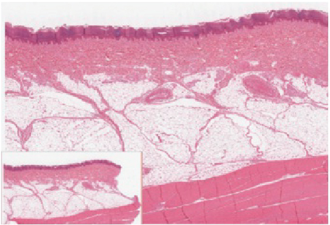
Figure \(\PageIndex{3}\):EpidermisThe epidermis is epithelium composed of multiple layers of cells. The basal layer consists of cuboidal cells, whereas the outer layers are squamous, keratinized cells, so the whole epithelium is often described as being keratinized stratified squamous epithelium. LM × 40. (Micrograph provided by the Regents of University of Michigan Medical School © 2012)
View theUniversity of Michigan WebScopeto explore the tissue sample in greater detail. If you zoom on the cells at the outermost layer of this section of skin, what do you notice about the cells?
Thestratum basale(also called the stratum germinativum) is the deepest epidermal layer and attaches the epidermis to the basal lamina, below which lie the layers of the dermis. The cells in the stratum basale bond to the dermis via intertwining collagen fibers, referred to as the basement membrane. A finger-like projection, or fold, known as thedermal papilla(plural = dermal papillae) is found in the superficial portion of the dermis. Dermal papillae increase the strength of the connection between the epidermis and dermis; the greater the folding, the stronger the connections made (Figure \(\PageIndex{4}\)).
![This illustration shows a cross section of the epidermis. The cells of the innermost layer, the stratum basale, are large and have a purple nucleus. The stratum basale curls around the dermis, which projects into the epidermis. The stratum basale contains four layers of large, triangle-shaped keratinocytes. Fibers are visible within the spaces between keratinocytes in the stratum basale. A melanocyte is also present in this layer. The melanocyte possesses finger-like projections extending from its main cell body. The projections branch through the extracellular spaces between nearby keratinocytes. Above the stratum basale is the stratum spinosum which consists of 8 layers of oval-shaped keratinocytes. The nucleus is present in these keratinocytes, but has faded to a lighter purple. The stratum granulosum contains five layers of keratinocytes, each containing spots in its cytoplasm, labeled the lamellar granules. The stratum lucidium contains 4 layers of diamond-shaped cells with no nucleus. The stratum corneum contains 9 layers of keratinocytes with no nucleus , nor cytoplasm. A few of the cells in the topmost layer of the stratum corneum are flaking off from the skin.](images/ch5/fig5-5-this-illustration-shows-a-cross-section-.jpg)
Figure \(\PageIndex{4}\):Layers of the EpidermisThe epidermis of thick skin has five layers: stratum basale, stratum spinosum, stratum granulosum, stratum lucidum, and stratum corneum.
The stratum basale is a single layer of cells primarily made of basal cells. Abasal cellis a cuboidal-shaped stem cell that is a precursor of the keratinocytes of the epidermis. All of the keratinocytes are produced from this single layer of cells, which are constantly going through mitosis to produce new cells. As new cells are formed, the existing cells are pushed superficially away from the stratum basale. Two other cell types are found dispersed among the basal cells in the stratum basale. The first is aMerkel cell, which functions as a receptor and is responsible for stimulating sensory nerves that the brain perceives as touch. These cells are especially abundant on the surfaces of the hands and feet. The second is amelanocyte, a cell that produces the pigment melanin.Melaningives hair and skin its color, and also helps protect the living cells of the epidermis from ultraviolet (UV) radiation damage.
In a growing fetus, fingerprints form where the cells of the stratum basale meet the papillae of the underlying dermal layer (papillary layer), resulting in the formation of the ridges on your fingers that you recognize as fingerprints. Fingerprints are unique to each individual and are used for forensic analyses because the patterns do not change with the growth and aging processes.
#### Stratum Spinosum
As the name suggests, thestratum spinosumis spiny in appearance due to the protruding cell processes that join the cells via a structure called adesmosome. The desmosomes interlock with each other and strengthen the bond between the cells. It is interesting to note that the “spiny” nature of this layer is an artifact of the staining process. Unstained epidermis samples do not exhibit this characteristic appearance. The stratum spinosum is composed of eight to 10 layers of keratinocytes, formed as a result of cell division in the stratum basale (Figure \(\PageIndex{5}\)). Interspersed among the keratinocytes of this layer is a type of dendritic cell called theLangerhans cell, which functions as a macrophage by engulfing bacteria, foreign particles, and damaged cells that occur in this layer.
![This micrograph of the epidermis shows stratum corneum as a rough, darkened layer. The next layer, the stratum granulosum, contains white cells with areas of black in their cytoplasm, equal in thickness to the stratum corneum. The third layer, the stratum spinosum, contains large, grayish cells. The stratum spinosum is the thickest layer, occupying half of the micrograph. A hair follicle is embedded in this layer, which is a round structure with black, concentric spots. The fourth layer is the stratum basalis, which contains grayish cells with clear, dark nuclei, similar in thickness to the stratum corneum. The dermis is the deepest layer, and is lightly-colored with interspersed gray cells. A cross-section of a capillary is visible within the dermis.](images/ch5/fig5-6-this-micrograph-of-the-epidermis-shows-s.jpg)
Figure \(\PageIndex{5}\):Cells of the EpidermisThe cells in the different layers of the epidermis originate from basal cells located in the stratum basale, yet the cells of each layer are distinctively different. EM × 2700. (Micrograph provided by the Regents of University of Michigan Medical School © 2012)
View theUniversity of Michigan WebScopeto explore the tissue sample in greater detail. If you zoom on the cells at the outermost layer of this section of skin, what do you notice about the cells?
The keratinocytes in the stratum spinosum begin the synthesis of keratin and release a water-repelling glycolipid that helps prevent water loss from the body, making the skin relatively waterproof. As new keratinocytes are produced atop the stratum basale, the keratinocytes of the stratum spinosum are pushed into the stratum granulosum.
#### Stratum Granulosum
Thestratum granulosumhas a grainy appearance due to further changes to the keratinocytes as they are pushed from the stratum spinosum. The cells (three to five layers deep) become flatter, their cell membranes thicken, and they generate large amounts of the proteins keratin, which is fibrous, andkeratohyalin, which accumulates as lamellar granules within the cells (see Figure 5.5). These two proteins make up the bulk of the keratinocyte mass in the stratum granulosum and give the layer its grainy appearance. The nuclei and other cell organelles disintegrate as the cells die, leaving behind the keratin, keratohyalin, and cell membranes that will form the stratum lucidum, the stratum corneum, and the accessory structures of hair and nails.
Thestratum lucidumis a smooth, seemingly translucent layer of the epidermis located just above the stratum granulosum and below the stratum corneum. This thin layer of cells is found only in the thick skin of the palms, soles, and digits. The keratinocytes that compose the stratum lucidum are dead and flattened (see Figure 5.5). These cells are densely packed witheleidin, a clear protein, derived from keratohyalin, which gives these cells their transparent (i.e., lucid) appearance.
Thestratum corneumis the most superficial layer of the epidermis and is the layer exposed to the outside environment (see Figure 5.5). The increased keratinization (also called cornification) of the cells in this layer gives it its name. There are usually 15 to 30 layers of cells in the stratum corneum. This dry, dead layer helps prevent the penetration of microbes and the dehydration of underlying tissues, and provides a mechanical protection against abrasion for the more delicate, underlying layers. Cells in this layer are shed periodically and are replaced by cells pushed up from the stratum granulosum (or stratum lucidum in the case of the palms and soles of feet). The entire layer is replaced during a period of about 4 weeks. Cosmetic procedures, such as microdermabrasion, help remove some of the dry, upper layer and aim to keep the skin looking “fresh” and healthy.
Thedermismight be considered the “core” of the integumentary system (derma- = “skin”), as distinct from the epidermis (epi- = “upon” or “over”) and hypodermis (hypo- = “below”). It contains blood and lymph vessels, nerves, and other structures, such as hair follicles and sweat glands. The dermis is made of two layers of connective tissue that compose an interconnected mesh of elastin and collagenous fibers, produced by fibroblasts (Figure \(\PageIndex{6}\)).
![This micrograph shows layers of skin in a cross section. The papillary layer of the dermis extends between the downward fingers of the darkly stained epidermis. The papillary layer appears finer than the reticular layer, consisting of smaller, densely-packed fibers. The reticular layer is three times thicker than the papillary layer and contains larger, thicker fibers. The fibers seem more loosely packed than those of the papillary layer, with some separated by empty spaces. Both layers of the dermis contain cells with darkly stained nuclei.](images/ch5/fig5-7-this-micrograph-shows-layers-of-skin-in-.jpg)
Figure \(\PageIndex{6}\):Layers of the DermisThis stained slide shows the two components of the dermis—the papillary layer and the reticular layer. Both are made of connective tissue with fibers of collagen extending from one to the other, making the border between the two somewhat indistinct. The dermal papillae extending into the epidermis belong to the papillary layer, whereas the dense collagen fiber bundles below belong to the reticular layer. LM × 10. (credit: modification of work by “kilbad”/Wikimedia Commons)
Thepapillary layeris made of loose, areolar connective tissue, which means the collagen and elastin fibers of this layer form a loose mesh. This superficial layer of the dermis projects into the stratum basale of the epidermis to form finger-like dermal papillae (see Figure 5.7). Within the papillary layer are fibroblasts, a small number of fat cells (adipocytes), and an abundance of small blood vessels. In addition, the papillary layer contains phagocytes, defensive cells that help fight bacteria or other infections that have breached the skin. This layer also contains lymphatic capillaries, nerve fibers, and touch receptors called the Meissner corpuscles.
Underlying the papillary layer is the much thickerreticular layer, composed of dense, irregular connective tissue. This layer is well vascularized and has a rich sensory and sympathetic nerve supply. The reticular layer appears reticulated (net-like) due to a tight meshwork of fibers.Elastin fibersprovide some elasticity to the skin, enabling movement. Collagen fibers provide structure and tensile strength, with strands of collagen extending into both the papillary layer and the hypodermis. In addition, collagen binds water to keep the skin hydrated. Collagen injections and Retin-A creams help restore skin turgor by either introducing collagen externally or stimulating blood flow and repair of the dermis, respectively.
Thehypodermis(also called the subcutaneous layer or superficial fascia) is a layer directly below the dermis and serves to connect the skin to the underlying fascia (fibrous tissue) of the bones and muscles. It is not strictly a part of the skin, although the border between the hypodermis and dermis can be difficult to distinguish. The hypodermis consists of well-vascularized, loose, areolar connective tissue and adipose tissue, which functions as a mode of fat storage and provides insulation and cushioning for the integument.
The hypodermis is home to most of the fat that concerns people when they are trying to keep their weight under control. Adipose tissue present in the hypodermis consists of fat-storing cells called adipocytes. This stored fat can serve as an energy reserve, insulate the body to prevent heat loss, and act as a cushion to protect underlying structures from trauma.
Where the fat is deposited and accumulates within the hypodermis depends on hormones (testosterone, estrogen, insulin, glucagon, leptin, and others), as well as genetic factors. Fat distribution changes as our bodies mature and age. Males tend to accumulate fat in different areas (neck, arms, lower back, and abdomen) than do females (breasts, hips, thighs, and buttocks). The body mass index (BMI) is often used as a measure of fat, although this measure is, in fact, derived from a mathematical formula that compares body weight (mass) to height. Therefore, its accuracy as a health indicator can be called into question in individuals who are extremely physically fit.
In many animals, there is a pattern of storing excess calories as fat to be used in times when food is not readily available. In much of the developed world, insufficient exercise coupled with the ready availability and consumption of high-calorie foods have resulted in unwanted accumulations of adipose tissue in many people. Although periodic accumulation of excess fat may have provided an evolutionary advantage to our ancestors, who experienced unpredictable bouts of famine, it is now becoming chronic and considered a major health threat. Recent studies indicate that a distressing percentage of our population is overweight and/or clinically obese. Not only is this a problem for the individuals affected, but it also has a severe impact on our healthcare system. Changes in lifestyle, specifically in diet and exercise, are the best ways to control body fat accumulation, especially when it reaches levels that increase the risk of heart disease and diabetes.
The color of skin is influenced by a number of pigments, including melanin, carotene, and hemoglobin. Recall that melanin is produced by cells called melanocytes, which are found scattered throughout the stratum basale of the epidermis. The melanin is transferred into the keratinocytes via a cellular vesicle called amelanosome(Figure \(\PageIndex{7}\)).
![This figure consists of two diagrams side by side. The right diagram shows development of light colored skin; the left shows development of dark-colored skin. In both, a brown melanocyte sits at the border between the dermis and epidermis. The melanocyte has a large nucleus and six finger-like extensions. These reach between cells of the stratum basalis. Sections of the extensions detach and travel through the skins. These are melanosomes. In the left diagram, both the melanocyte and melanosomes contain melanin particles, shown as dark dots. Melanosomes travel upwards to outer skin layers, releasing melanin. As a result, keratinocytes in the left diagram contain several melanin particles that darken skin color. In light colored skin, the melanocyte contains no melanin. It still releases melanosomes into upper layers of the skin; however, these melanosomes contain no melanin. Therefore, the skin does not darken and remains light.](images/ch5/fig5-8-this-figure-consists-of-two-diagrams-sid.jpg)
Figure \(\PageIndex{7}\):Skin PigmentationThe relative coloration of the skin depends of the amount of melanin produced by melanocytes in the stratum basale and taken up by keratinocytes.
Melanin occurs in two primary forms. Eumelanin exists as black and brown, whereas pheomelanin provides a red color. Dark-skinned individuals produce more melanin than those with pale skin. Exposure to the UV rays of the sun or a tanning salon causes melanin to be manufactured and built up in keratinocytes, as sun exposure stimulates keratinocytes to secrete chemicals that stimulate melanocytes. The accumulation of melanin in keratinocytes results in the darkening of the skin, or a tan. This increased melanin accumulation protects the DNA of epidermal cells from UV ray damage and the breakdown of folic acid, a nutrient necessary for our health and well-being. In contrast, too much melanin can interfere with the production of vitamin D, an important nutrient involved in calcium absorption. Thus, the amount of melanin present in our skin is dependent on a balance between available sunlight and folic acid destruction, and protection from UV radiation and vitamin D production.
It requires about 10 days after initial sun exposure for melanin synthesis to peak, which is why pale-skinned individuals tend to suffer sunburns of the epidermis initially. Dark-skinned individuals can also get sunburns, but are more protected than are pale-skinned individuals. Melanosomes are temporary structures that are eventually destroyed by fusion with lysosomes; this fact, along with melanin-filled keratinocytes in the stratum corneum sloughing off, makes tanning impermanent.
Too much sun exposure can eventually lead to wrinkling due to the destruction of the cellular structure of the skin, and in severe cases, can cause sufficient DNA damage to result in skin cancer. When there is an irregular accumulation of melanocytes in the skin, freckles appear. Moles are larger masses of melanocytes, and although most are benign, they should be monitored for changes that might indicate the presence of cancer (Figure \(\PageIndex{8}\)).
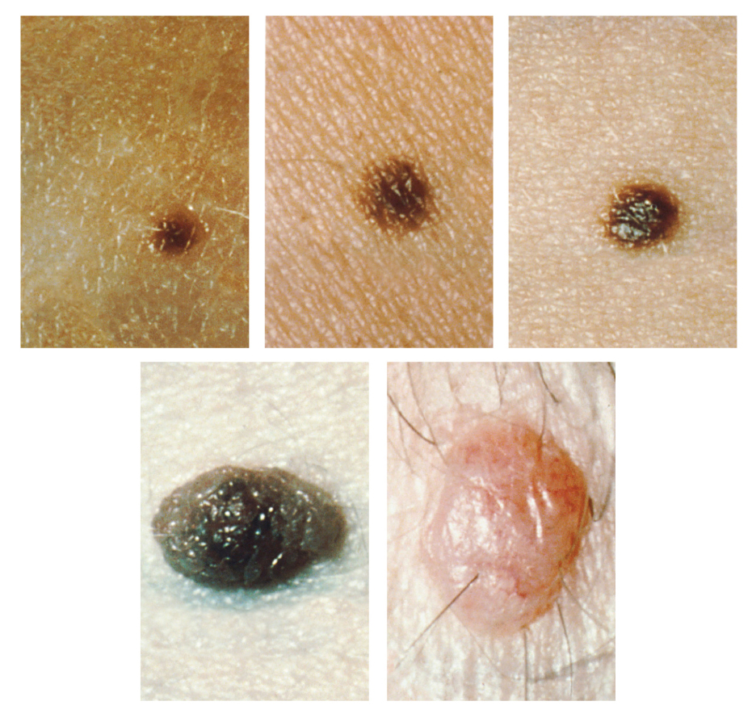
Figure \(\PageIndex{8}\):MolesMoles range from benign accumulations of melanocytes to melanomas. These structures populate the landscape of our skin. (credit: the National Cancer Institute)
#### Integumentary System
The first thing a clinician sees is the skin, and so the examination of the skin should be part of any thorough physical examination. Most skin disorders are relatively benign, but a few, including melanomas, can be fatal if untreated. A couple of the more noticeable disorders, albinism and vitiligo, affect the appearance of the skin and its accessory organs. Although neither is fatal, it would be hard to claim that they are benign, at least to the individuals so afflicted.
Albinismis a genetic disorder that affects (completely or partially) the coloring of skin, hair, and eyes. The defect is primarily due to the inability of melanocytes to produce melanin. Individuals with albinism tend to appear white or very pale due to the lack of melanin in their skin and hair. Recall that melanin helps protect the skin from the harmful effects of UV radiation. Individuals with albinism tend to need more protection from UV radiation, as they are more prone to sunburns and skin cancer. They also tend to be more sensitive to light and have vision problems due to the lack of pigmentation on the retinal wall. Treatment of this disorder usually involves addressing the symptoms, such as limiting UV light exposure to the skin and eyes. Invitiligo, the melanocytes in certain areas lose their ability to produce melanin, possibly due to an autoimmune reaction. This leads to a loss of color in patches (Figure \(\PageIndex{9}\)). Neither albinism nor vitiligo directly affects the lifespan of an individual.
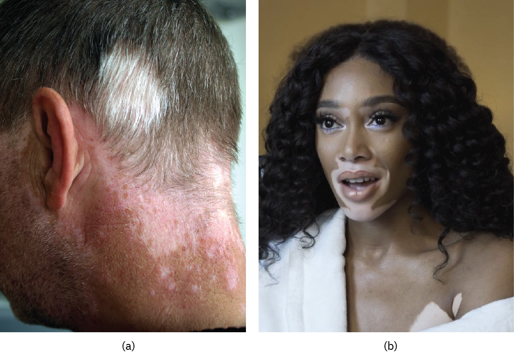
Figure \(\PageIndex{9}\):VitiligoIndividuals with vitiligo experience depigmentation that results in lighter colored patches of skin. The condition is especially noticeable
Other changes in the appearance of skin coloration can be indicative of diseases associated with other body systems. Liver disease or liver cancer can cause the accumulation of bile and the yellow pigment bilirubin, leading to the skin appearing yellow or jaundiced (jauneis the French word for “yellow”). Tumors of the pituitary gland can result in the secretion of large amounts of melanocyte-stimulating hormone (MSH), which results in a darkening of the skin. Similarly, Addison’s disease can stimulate the release of excess amounts of adrenocorticotropic hormone (ACTH), which can give the skin a deep bronze color. A sudden drop in oxygenation can affect skin color, causing the skin to initially turn ashen (white). With a prolonged reduction in oxygen levels, dark red deoxyhemoglobin becomes dominant in the blood, making the skin appear blue, a condition referred to as cyanosis (kyanosis the Greek word for “blue”). This happens when the oxygen supply is restricted, as when someone is experiencing difficulty in breathing because of asthma or a heart attack. However, in these cases the effect on skin color has nothing do with the skin’s pigmentation.
This ABC video follows the story of a pair of fraternal African-American twins, one of whom is albino. Watch thisvideoto learn about the challenges these children and their family face. Which ethnicities do you think are exempt from the possibility of albinism?
📖 OpenStax Anatomy & Physiology 2e, Section 5.2. openstax.org · CC BY 4.0
- Identify the accessory structures of the skin
- Describe the structure and function of hair and nails
- Describe the structure and function of sweat glands and sebaceous glands
Accessory structures of the skin include hair, nails, sweat glands, and sebaceous glands. These structures embryologically originate from the epidermis and can extend down through the dermis into the hypodermis.
Hairis a keratinous filament growing out of the epidermis. It is primarily made of dead, keratinized cells. Strands of hair originate in an epidermal penetration of the dermis called thehair follicle. Thehair shaftis the part of the hair not anchored to the follicle, and much of this is exposed at the skin’s surface. The rest of the hair, which is anchored in the follicle, lies below the surface of the skin and is referred to as thehair root. The hair root ends deep in the dermis at thehair bulb, and includes a layer of mitotically active basal cells called thehair matrix. The hair bulb surrounds thehair papilla, which is made of connective tissue and contains blood capillaries and nerve endings from the dermis (Figure \(\PageIndex{1}\)).
![This diagram shows a cross section of the skin containing a hair follicle. The follicle is teardrop shaped. Its enlarged base, labeled the hair bulb, is embedded in the hypodermis. The outermost layer of the follicle is the epidermis, which invaginates from the skin surface to envelope the follicle. Within the epidermis is the outer root sheath, which is only present on the hair bulb. It does not extend up the shaft of the hair. Within the outer root sheath is the inner root sheath. The inner root sheath extends about half of the way up the hair shaft, ending midway through the dermis. The hair matrix is the innermost layer. The hair matrix surrounds the bottom of the hair shaft where it is embedded within the hair bulb. The hair shaft, in itself, contains three layers: the outermost cuticle, a middle layer called the cortex, and an innermost layer called the medulla.](images/ch5/fig5-11-this-diagram-shows-a-cross-section-of-th.jpg)
Figure \(\PageIndex{1}\):HairHair follicles originate in the epidermis and have many different parts.
Just as the basal layer of the epidermis forms the layers of epidermis that get pushed to the surface as the dead skin on the surface sheds, the basal cells of the hair bulb divide and push cells outward in the hair root and shaft as the hair grows. Themedullaforms the central core of the hair, which is surrounded by thecortex, a layer of compressed, keratinized cells that is covered by an outer layer of very hard, keratinized cells known as thecuticle. These layers are depicted in a longitudinal cross-section of the hair follicle (Figure \(\PageIndex{2}\)), although not all hair has a medullary layer. Hair texture (straight, curly) is determined by the shape and structure of the cortex, and to the extent that it is present, the medulla. The shape and structure of these layers are, in turn, determined by the shape of the hair follicle. Hair growth begins with the production of keratinocytes by the basal cells of the hair bulb. As new cells are deposited at the hair bulb, the hair shaft is pushed through the follicle toward the surface. Keratinization is completed as the cells are pushed to the skin surface to form the shaft of hair that is externally visible. The external hair is completely dead and composed entirely of keratin. For this reason, our hair does not have sensation. Furthermore, you can cut your hair or shave without damaging the hair structure because the cut is superficial. Most chemical hair removers also act superficially; however, electrolysis and yanking both attempt to destroy the hair bulb so hair cannot grow.
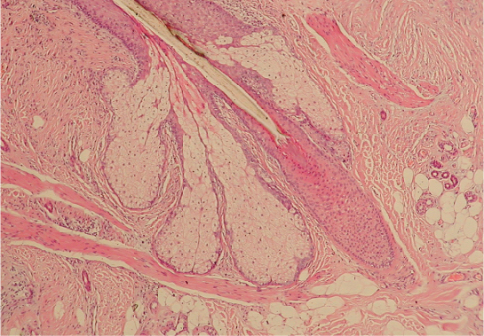
Figure \(\PageIndex{2}\):Hair FollicleThe slide shows a cross-section of a hair follicle. Basal cells of the hair matrix in the center differentiate into cells of the inner root sheath. Basal cells at the base of the hair root form the outer root sheath. LM × 4. (credit: modification of work by “kilbad”/Wikimedia Commons)
The wall of the hair follicle is made of three concentric layers of cells. The cells of theinternal root sheathsurround the root of the growing hair and extend just up to the hair shaft. They are derived from the basal cells of the hair matrix. Theexternal root sheath, which is an extension of the epidermis, encloses the hair root. It is made of basal cells at the base of the hair root and tends to be more keratinous in the upper regions. Theglassy membraneis a thick, clear connective tissue sheath covering the hair root, connecting it to the tissue of the dermis.
The hair follicle is made of multiple layers of cells that form from basal cells in the hair matrix and the hair root. Cells of the hair matrix divide and differentiate to form the layers of the hair. Watch thisvideoto learn more about hair follicles.
Hair serves a variety of functions, including protection, sensory input, thermoregulation, and communication. For example, hair on the head protects the skull from the sun. The hair in the nose and ears, and around the eyes (eyelashes) defends the body by trapping and excluding dust particles that may contain allergens and microbes. Hair of the eyebrows prevents sweat and other particles from dripping into and bothering the eyes. Hair also has a sensory function due to sensory innervation by a hair root plexus surrounding the base of each hair follicle. Hair is extremely sensitive to air movement or other disturbances in the environment, much more so than the skin surface. This feature is also useful for the detection of the presence of insects or other potentially damaging substances on the skin surface. Each hair root is connected to a smooth muscle called thearrector pilithat contracts in response to nerve signals from the sympathetic nervous system, making the external hair shaft “stand up.” The primary purpose for this is to trap a layer of air to add insulation. This is visible in humans as goose bumps and even more obvious in animals, such as when a frightened cat raises its fur. Of course, this is much more obvious in organisms with a heavier coat than most humans, such as dogs and cats.
Hair grows and is eventually shed and replaced by new hair. This occurs in three phases. The first is theanagenphase, during which cells divide rapidly at the root of the hair, pushing the hair shaft up and out. The length of this phase is measured in years, typically from 2 to 7 years. Thecatagenphase lasts only 2 to 3 weeks, and marks a transition from the hair follicle’s active growth. Finally, during thetelogenphase, the hair follicle is at rest and no new growth occurs. At the end of this phase, which lasts about 2 to 4 months, another anagen phase begins. The basal cells in the hair matrix then produce a new hair follicle, which pushes the old hair out as the growth cycle repeats itself. Hair typically grows at the rate of 0.3 mm per day during the anagen phase. On average, 50 hairs are lost and replaced per day. Hair loss occurs if there is more hair shed than what is replaced and can happen due to hormonal or dietary changes. Hair loss can also result from the aging process, or the influence of hormones.
Similar to the skin, hair gets its color from the pigment melanin, produced by melanocytes in the hair papilla. Different hair color results from differences in the type of melanin, which is genetically determined. As a person ages, the melanin production decreases, and hair tends to lose its color and becomes gray and/or white.
The nail bed is a specialized structure of the epidermis that is found at the tips of our fingers and toes. Thenail bodyis formed on thenail bed, and protects the tips of our fingers and toes as they are the farthest extremities and the parts of the body that experience the maximum mechanical stress (Figure \(\PageIndex{3}\)). In addition, the nail body forms a back-support for picking up small objects with the fingers. The nail body is composed of densely packed dead keratinocytes. The epidermis in this part of the body has evolved a specialized structure upon which nails can form. The nail body forms at thenail root, which has a matrix of proliferating cells from the stratum basale that enables the nail to grow continuously. The lateralnail foldoverlaps the nail on the sides, helping to anchor the nail body. The nail fold that meets the proximal end of the nail body forms thenail cuticle, also called theeponychium. The nail bed is rich in blood vessels, making it appear pink, except at the base, where a thick layer of epithelium over the nail matrix forms a crescent-shaped region called thelunula(the “little moon”). The area beneath the free edge of the nail, furthest from the cuticle, is called thehyponychium. It consists of a thickened layer of stratum corneum.
![These two images show anatomy of the fingernail region. The top image shows a dorsal view of a finger. The proximal nail fold is the part underneath where the skin of the finger connects with the edge of the nail. The eponychium is a thin, pink layer between the white proximal edge of the nail (the lunula), and the edge of the finger skin. The lunula appears as a crescent-shaped white area at the proximal edge of the pink-shaded nail. The lateral nail folds are where the sides of the nail contact the finger skin. The distal edge of the nail is white and is called the free edge. An arrow indicates that the nail grows distally out from the proximal nail fold. The lower image shows a lateral view of the nail bed anatomy. In this view, one can see how the edge of the nail is located just proximal to the nail fold. This end of the nail, from which the nail grows, is called the nail root.](images/ch5/fig5-13-these-two-images-show-anatomy-of-the-fin.jpg)
Figure \(\PageIndex{3}\):NailsThe nail is an accessory structure of the integumentary system
Nails are accessory structures of the integumentary system. Visit thislinkto learn more about the origin and growth of fingernails.
When the body becomes warm,sudoriferous glandsproduce sweat to cool the body. Sweat glands develop from epidermal projections into the dermis and are classified as merocrine glands; that is, the secretions are excreted by exocytosis through a duct without affecting the cells of the gland. There are two types of sweat glands, each secreting slightly different products.
Aneccrine sweat glandis type of gland that produces a hypotonic sweat for thermoregulation. These glands are found all over the skin’s surface, but are especially abundant on the palms of the hand, the soles of the feet, and the forehead (Figure \(\PageIndex{4}\)). They are coiled glands lying deep in the dermis, with the duct rising up to a pore on the skin surface, where the sweat is released. This type of sweat, released by exocytosis, is hypotonic and composed mostly of water, with some salt, antibodies, traces of metabolic waste, and dermicidin, an antimicrobial peptide. Eccrine glands are a primary component of thermoregulation in humans and thus help to maintain homeostasis.
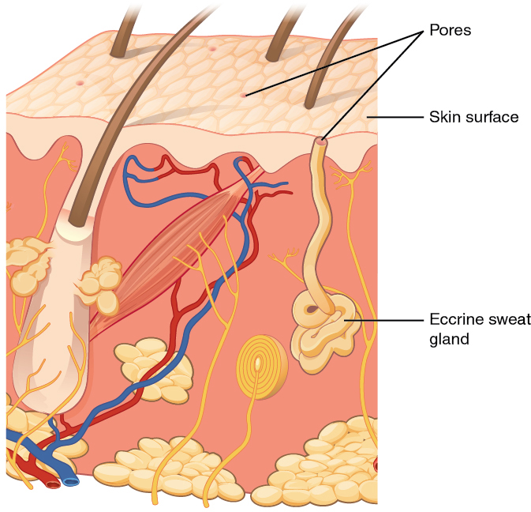
Figure \(\PageIndex{4}\):Eccrine GlandEccrine glands are coiled glands in the dermis that release sweat that is mostly water.
Anapocrine sweat glandis usually associated with hair follicles in densely hairy areas, such as armpits and genital regions. Apocrine sweat glands are larger than eccrine sweat glands and lie deeper in the dermis, sometimes even reaching the hypodermis, with the duct normally emptying into the hair follicle. In addition to water and salts, apocrine sweat includes organic compounds that make the sweat thicker and subject to bacterial decomposition and subsequent smell. The release of this sweat is under both nervous and hormonal control, and plays a role in the poorly understood human pheromone response. Most commercial antiperspirants use an aluminum-based compound as their primary active ingredient to stop sweat. When the antiperspirant enters the sweat gland duct, the aluminum-based compounds precipitate due to a change in pH and form a physical block in the duct, which prevents sweat from coming out of the pore.
Sweating regulates body temperature. The composition of the sweat determines whether body odor is a byproduct of sweating. Visit thislinkto learn more about sweating and body odor.
Asebaceous glandis a type of oil gland that is found all over the body and helps to lubricate and waterproof the skin and hair. Most sebaceous glands are associated with hair follicles. They generate and excretesebum, a mixture of lipids, onto the skin surface, thereby naturally lubricating the dry and dead layer of keratinized cells of the stratum corneum, keeping it pliable. The fatty acids of sebum also have antibacterial properties, and prevent water loss from the skin in low-humidity environments. The secretion of sebum is stimulated by hormones, many of which do not become active until puberty. Thus, sebaceous glands are relatively inactive during childhood.
📖 OpenStax Anatomy & Physiology 2e, Section 5.3. openstax.org · CC BY 4.0
- Describe the different functions of the skin and the structures that enable them
- Explain how the skin helps maintain body temperature
The skin and accessory structures perform a variety of essential functions, such as protecting the body from invasion by microorganisms, chemicals, and other environmental factors; preventing dehydration; acting as a sensory organ; modulating body temperature and electrolyte balance; and synthesizing vitamin D. The underlying hypodermis has important roles in storing fats, forming a “cushion” over underlying structures, and providing insulation from cold temperatures.
The skin protects the rest of the body from the basic elements of nature such as wind, water, and UV sunlight. It acts as a protective barrier against water loss, due to the presence of layers of keratin and glycolipids in the stratum corneum. It also is the first line of defense against abrasive activity due to contact with grit, microbes, or harmful chemicals. Sweat excreted from sweat glands deters microbes from over-colonizing the skin surface by generating dermicidin, which has antibiotic properties.
#### Tattoos and Piercings
The word “armor” evokes several images. You might think of a Roman centurion or a medieval knight in a suit of armor. The skin, in its own way, functions as a form of armor—body armor. It provides a barrier between your vital, life-sustaining organs and the influence of outside elements that could potentially damage them.
For any form of armor, a breach in the protective barrier poses a danger. The skin can be breached when a child skins a knee or an adult has blood drawn—one is accidental and the other medically necessary. However, you also breach this barrier when you choose to “accessorize” your skin with a tattoo or body piercing. Because the needles involved in producing body art and piercings must penetrate the skin, there are dangers associated with the practice. These include allergic reactions; skin infections; blood-borne diseases, such as tetanus, hepatitis C, and hepatitis D; and the growth of scar tissue. Despite the risk, the practice of piercing the skin for decorative purposes has become increasingly popular. According to the American Academy of Dermatology, 24 percent of people from ages 18 to 50 have a tattoo.
Tattooing has a long history, dating back thousands of years ago. The dyes used in tattooing typically derive from metals. A person with tattoos should be cautious when having a magnetic resonance imaging (MRI) scan because an MRI machine uses powerful magnets to create images of the soft tissues of the body, which could react with the metals contained in the tattoo dyes. Watch thisvideoto learn more about tattooing.
The fact that you can feel an ant crawling on your skin, allowing you to flick it off before it bites, is because the skin, and especially the hairs projecting from hair follicles in the skin, can sense changes in the environment. The hair root plexus surrounding the base of the hair follicle senses a disturbance, and then transmits the information to the central nervous system (brain and spinal cord), which can then respond by activating the skeletal muscles of your eyes to see the ant and the skeletal muscles of the body to act against the ant.
The skin acts as a sense organ because the epidermis, dermis, and the hypodermis contain specialized sensory nerve structures that detect touch, surface temperature, and pain. These receptors are more concentrated on the tips of the fingers, which are most sensitive to touch, especially theMeissner corpuscle(tactile corpuscle) (Figure \(\PageIndex{1}\)), which responds to light touch, and thePacinian corpuscle(lamellated corpuscle), which responds to vibration. Merkel cells, seen scattered in the stratum basale, are also touch receptors. In addition to these specialized receptors, there are sensory nerves connected to each hair follicle, pain and temperature receptors scattered throughout the skin, and motor nerves innervate the arrector pili muscles and glands. This rich innervation helps us sense our environment and react accordingly.
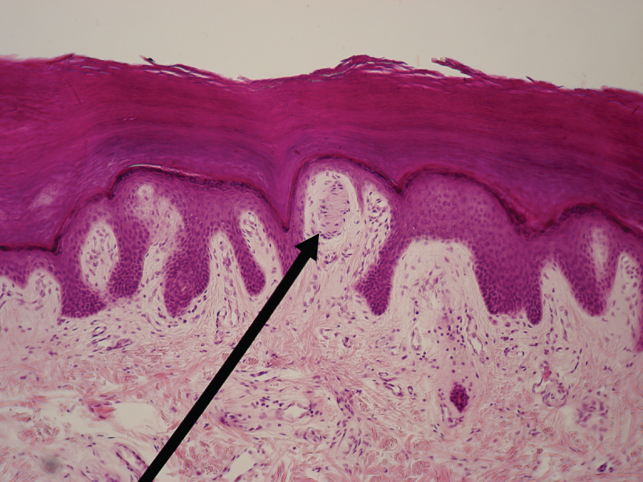
Figure \(\PageIndex{1}\):Light Micrograph of a Meissner CorpuscleIn this micrograph of a skin cross-section, you can see a Meissner corpuscle (arrow), a type of touch receptor located in a dermal papilla adjacent to the basement membrane and stratum basale of the overlying epidermis. LM × 100. (credit: “Wbensmith”/Wikimedia Commons)
The integumentary system helps regulate body temperature through its tight association with the sympathetic nervous system, the division of the nervous system involved in our fight-or-flight responses. The sympathetic nervous system is continuously monitoring body temperature and initiating appropriate motor responses. Recall that sweat glands, accessory structures to the skin, secrete water, salt, and other substances to cool the body when it becomes warm. Even when the body does not appear to be noticeably sweating, approximately 500 mL of sweat (insensible perspiration) are secreted a day. If the body becomes excessively warm due to high temperatures, vigorous activity (\(\PageIndex{2}\)ac), or a combination of the two, sweat glands will be stimulated by the sympathetic nervous system to produce large amounts of sweat, as much as 0.7 to 1.5 L per hour for an active person. When the sweat evaporates from the skin surface, the body is cooled as body heat is dissipated.
In addition to sweating, arterioles in the dermis dilate so that excess heat carried by the blood can dissipate through the skin and into the surrounding environment (Figure \(\PageIndex{2}\)b). This accounts for the skin redness that many people experience when exercising.
![Part A is a photo of a man skiing with several snow-covered trees in the background. Part B is a diagram with a right and left half. The left half is titled “ Heat is retained by the body,” while the right half is titled “Heat loss through radiation and convection.” Both show blood flowing from an artery through three capillary beds within the skin. The beds are arranged vertically, with the topmost bed located along the boundary of the dermis and epidermis. The bottommost bed is located deep in the hypodermis. The middle bed is evenly spaced between the topmost and bottommost beds. In each bed, oxygenated blood (red) enters the bed on the left and deoxygenated blood (blue) leaves the bed on the right. The left diagram shows a picture of snowflakes above the capillary beds, indicating that the weather is cold. Blood is only flowing through the deepest of the three capillary beds, as the upper beds are closed off to reduce heat loss from the outer layers of the skin. The right diagram shows a picture of the sun above the capillary beds, indicating that the weather is hot. Blood is flowing through all three capillary beds, allowing heat to radiate out of the blood, increasing heat loss. Part C is a photo of a man running through a forested trail on a summer day.](images/ch5/fig5-16-part-a-is-a-photo-of-a-man-skiing-with-s.jpg)
Figure \(\PageIndex{2}\):ThermoregulationDuring strenuous physical activities, such as skiing (a) or running (c), the dermal blood vessels dilate and sweat secretion increases (b). These mechanisms prevent the body from overheating. In contrast, the dermal blood vessels constrict to minimize heat loss in response to low temperatures (b). (credit a: “Trysil”/flickr; credit c: Ralph Daily)
When body temperatures drop, the arterioles constrict to minimize heat loss, particularly in the ends of the digits and tip of the nose. This reduced circulation can result in the skin taking on a whitish hue. Although the temperature of the skin drops as a result, passive heat loss is prevented, and internal organs and structures remain warm. If the temperature of the skin drops too much (such as environmental temperatures below freezing), the conservation of body core heat can result in the skin actually freezing, a condition called frostbite.
#### Integumentary System
All systems in the body accumulate subtle and some not-so-subtle changes as a person ages. Among these changes are reductions in cell division, metabolic activity, blood circulation, hormonal levels, and muscle strength (Figure \(\PageIndex{3}\)). In the skin, these changes are reflected in decreased mitosis in the stratum basale, leading to a thinner epidermis. The dermis, which is responsible for the elasticity and resilience of the skin, exhibits a reduced ability to regenerate, which leads to slower wound healing. The hypodermis, with its fat stores, loses structure due to the reduction and redistribution of fat, which in turn contributes to the thinning and sagging of skin.

Figure \(\PageIndex{3}\):AgingGenerally, skin, especially on the face and hands, starts to display the first noticeable signs of aging, as it loses its elasticity over time. (credit: Janet Ramsden)
The accessory structures also have lowered activity, generating thinner hair and nails, and reduced amounts of sebum and sweat. A reduced sweating ability can cause some elderly to be intolerant to extreme heat. Other cells in the skin, such as melanocytes and dendritic cells, also become less active, leading to a paler skin tone and lowered immunity. Wrinkling of the skin occurs due to breakdown of its structure, which results from decreased collagen and elastin production in the dermis, weakening of muscles lying under the skin, and the inability of the skin to retain adequate moisture.
Many anti-aging products can be found in stores today. In general, these products try to rehydrate the skin and thereby fill out the wrinkles, and some stimulate skin growth using hormones and growth factors. Additionally, invasive techniques include collagen injections to plump the tissue and injections of BOTOX®(the name brand of the botulinum neurotoxin) that paralyze the muscles that crease the skin and cause wrinkling.
The epidermal layer of human skin synthesizesvitamin Dwhen exposed to UV radiation. In the presence of sunlight, a form of vitamin D3called cholecalciferol is synthesized from a derivative of the steroid cholesterol in the skin. The liver converts cholecalciferol to calcidiol, which is then converted to calcitriol (the active chemical form of the vitamin) in the kidneys. Vitamin D is essential for normal absorption of calcium and phosphorous, which are required for healthy bones. The absence of sun exposure can lead to a lack of vitamin D in the body, leading to a condition calledrickets, a painful condition in children where the bones are misshapen due to a lack of calcium, causing bowleggedness. Elderly individuals who suffer from vitamin D deficiency can develop a condition called osteomalacia, a softening of the bones. In present day society, vitamin D is added as a supplement to many foods, including milk and orange juice, compensating for the need for sun exposure.
In addition to its essential role in bone health, vitamin D is essential for general immunity against bacterial, viral, and fungal infections. Recent studies are also finding a link between insufficient vitamin D and cancer.
📖 OpenStax Anatomy & Physiology 2e, Section 5.4. openstax.org · CC BY 4.0
- Describe several different diseases and disorders of the skin
- Describe the effect of injury to the skin and the process of healing
The integumentary system is susceptible to a variety of diseases, disorders, and injuries. These range from annoying but relatively benign bacterial or fungal infections that are categorized as disorders, to skin cancer and severe burns, which can be fatal. In this section, you will learn several of the most common skin conditions.
One of the most talked about diseases is skin cancer. Cancer is a broad term that describes diseases caused by abnormal cells in the body dividing uncontrollably. Most cancers are identified by the organ or tissue in which the cancer originates. One common form of cancer is skin cancer. The Skin Cancer Foundation reports that one in five Americans will experience some type of skin cancer in their lifetime. The degradation of the ozone layer in the atmosphere and the resulting increase in exposure to UV radiation has contributed to its rise. Overexposure to UV radiation damages DNA, which can lead to the formation of cancerous lesions. Although melanin offers some protection against DNA damage from the sun, often it is not enough. The fact that cancers can also occur on areas of the body that are normally not exposed to UV radiation suggests that there are additional factors that can lead to cancerous lesions.
In general, cancers result from an accumulation of DNA mutations. These mutations can result in cell populations that do not die when they should and uncontrolled cell proliferation that leads to tumors. Although many tumors are benign (harmless), some produce cells that can mobilize and establish tumors in other organs of the body; this process is referred to asmetastasis. Cancers are characterized by their ability to metastasize.
#### Basal Cell Carcinoma
Basal cell carcinomais a form of cancer that affects the mitotically active stem cells in the stratum basale of the epidermis. It is the most common of all cancers that occur in the United States and is frequently found on the head, neck, arms, and back, which are areas that are most susceptible to long-term sun exposure. Although UV rays are the main culprit, exposure to other agents, such as radiation and arsenic, can also lead to this type of cancer. Wounds on the skin due to open sores, tattoos, burns, etc. may be predisposing factors as well. Basal cell carcinomas start in the stratum basale and usually spread along this boundary. At some point, they begin to grow toward the surface and become an uneven patch, bump, growth, or scar on the skin surface (Figure \(\PageIndex{1}\)). Like most cancers, basal cell carcinomas respond best to treatment when caught early. Treatment options include surgery, freezing (cryosurgery), and topical ointments (Mayo Clinic 2012).
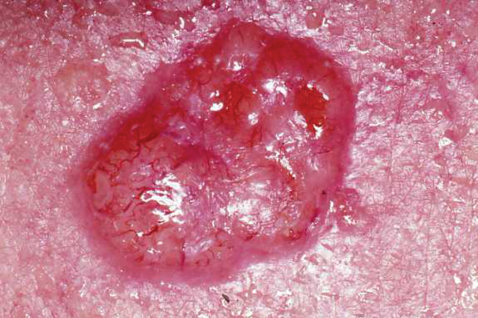
Figure \(\PageIndex{1}\):Basal Cell CarcinomaBasal cell carcinoma can take several different forms. Similar to other forms of skin cancer, it is readily cured if caught early and treated. (credit: John Hendrix, MD)
#### Squamous Cell Carcinoma
Squamous cell carcinomais a cancer that affects the keratinocytes of the stratum spinosum and presents as lesions commonly found on the scalp, ears, and hands (Figure \(\PageIndex{2}\)). It is the second most common skin cancer. The American Cancer Society reports that two of 10 skin cancers are squamous cell carcinomas, and it is more aggressive than basal cell carcinoma. If not removed, these carcinomas can metastasize. Surgery and radiation are used to cure squamous cell carcinoma.
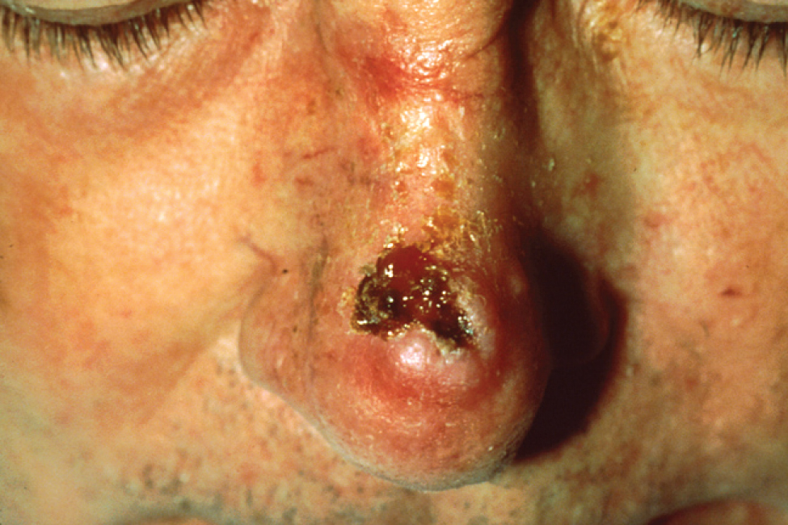
Amelanomais a cancer characterized by the uncontrolled growth of melanocytes, the pigment-producing cells in the epidermis. Typically, a melanoma develops from a mole. It is the most fatal of all skin cancers, as it is highly metastatic and can be difficult to detect before it has spread to other organs. Melanomas usually appear as asymmetrical brown and black patches with uneven borders and a raised surface (Figure \(\PageIndex{3}\)). Treatment typically involves surgical excision and immunotherapy.
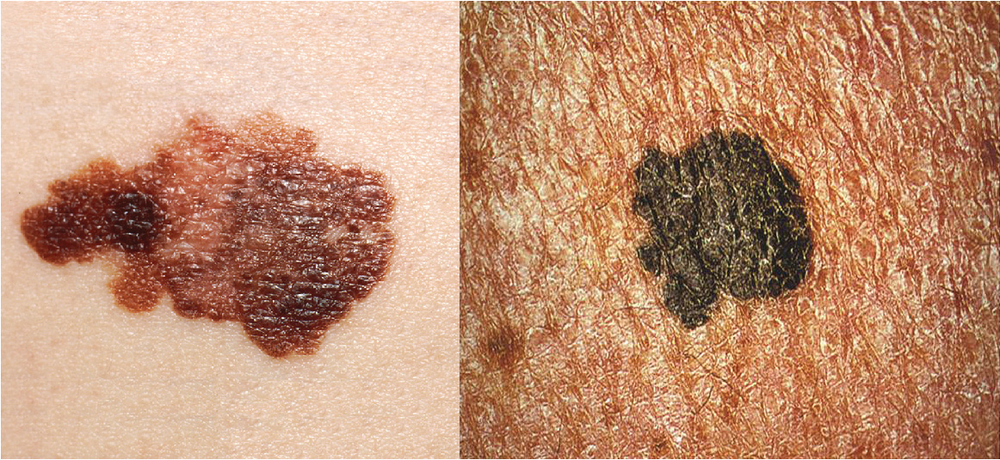
Figure \(\PageIndex{3}\):MelanomaMelanomas typically present as large brown or black patches with uneven borders and a raised surface. (credit: the National Cancer Institute / Centers for Disease Control)
Doctors often give their patients the following ABCDE mnemonic to help with the diagnosis of early-stage melanoma. If you observe a mole on your body displaying these signs, consult a doctor.
Some specialists cite the following additional signs for the most serious form, nodular melanoma:
Two common skin disorders are eczema and acne. Eczema is an inflammatory condition and occurs in individuals of all ages. Acne involves the clogging of pores, which can lead to infection and inflammation, and is often seen in adolescents. Other disorders, not discussed here, include seborrheic dermatitis (on the scalp), psoriasis, cold sores, impetigo, scabies, hives, and warts.
Eczemais an allergic reaction that manifests as dry, itchy patches of skin that resemble rashes (Figure \(\PageIndex{4}\). It may be accompanied by swelling of the skin, flaking, and in severe cases, bleeding. Many who suffer from eczema have antibodies against dust mites in their blood, but the link between eczema and allergy to dust mites has not been proven. Symptoms are usually managed with moisturizers, corticosteroid creams, and immunosuppressants.
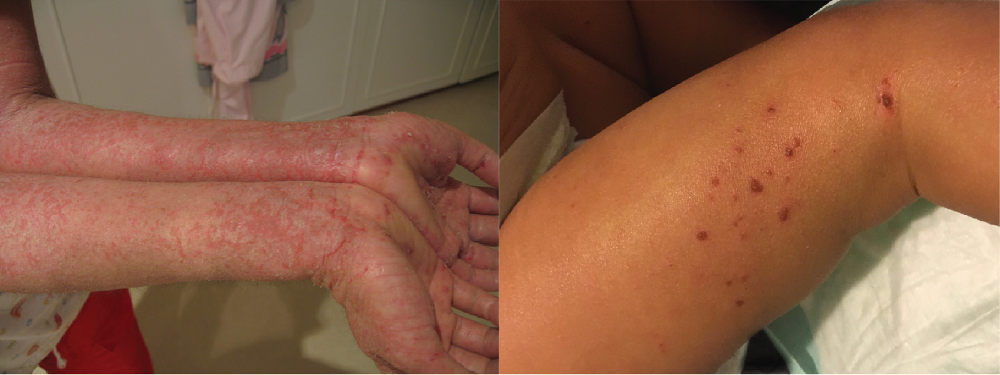
Figure \(\PageIndex{4}\):EczemaEczema is a common skin disorder that presents as a red, flaky rash. (credit: “Jambula” Wikimedia Commons / NIAID, Flickr)
Acneis a skin disturbance that typically occurs on areas of the skin that are rich in sebaceous glands (face and back). It is most common along with the onset of puberty due to associated hormonal changes, but can also occur in infants and continue into adulthood. Hormones, such as androgens, stimulate the release of sebum. An overproduction and accumulation of sebum along with keratin can block hair follicles. This plug is initially white. The sebum, when oxidized by exposure to air, turns black. Acne results from infection by acne-causing bacteria (PropionibacteriumandStaphylococcus), which can lead to redness and potential scarring due to the natural wound healing process (Figure \(\PageIndex{5}\)).
![Three diagrams show the progression of acne in three steps from left to right. All three depict a cross section of skin containing a hair follicle. In the left diagram, the follicle has a swollen area about halfway up the hair shaft, just above a sebaceous gland. The follicle is plugged with sebum, depicted as a yellowish substance. In the middle diagram, the follicle has become more swollen, as a label indicates that bacteria are reproducing within the blockage. The surrounding epidermis becomes inflamed as a result of the bacterial infection. In the rightmost image, the blockage has swollen to about five times its original size and has broken the surrounding epidermis, which is now red and inflamed.](images/ch5/fig5-22-three-diagrams-show-the-progression-of-a.jpg)
Figure \(\PageIndex{5}\):AcneAcne is a result of over-productive sebaceous glands, which leads to formation of blackheads and inflammation of the skin.
Have you ever had a rash that did not respond to over-the-counter creams, or a mole that you were concerned about? Dermatologists help patients with these types of problems and more, on a daily basis. Dermatologists are medical doctors who specialize in diagnosing and treating skin disorders. Like all medical doctors, dermatologists earn a medical degree and then complete several years of residency training. In addition, dermatologists may then participate in a dermatology fellowship or complete additional, specialized training in a dermatology practice. If practicing in the United States, dermatologists must pass the United States Medical Licensing Exam (USMLE), become licensed in their state of practice, and be certified by the American Board of Dermatology.
Most dermatologists work in a medical office or private-practice setting. They diagnose skin conditions and rashes, prescribe oral and topical medications to treat skin conditions, and may perform simple procedures, such as mole or wart removal. In addition, they may refer patients to an oncologist if skin cancer that has metastasized is suspected. Recently, cosmetic procedures have also become a prominent part of dermatology. Botox injections, laser treatments, and collagen and dermal filler injections are popular among patients, hoping to reduce the appearance of skin aging.
Dermatology is a competitive specialty in medicine. Limited openings in dermatology residency programs mean that many medical students compete for a few select spots. Dermatology is an appealing specialty to many prospective doctors, because unlike emergency room physicians or surgeons, dermatologists generally do not have to work excessive hours or be “on-call” weekends and holidays. Moreover, the popularity of cosmetic dermatology has made it a growing field with many lucrative opportunities. It is not unusual for dermatology clinics to market themselves exclusively as cosmetic dermatology centers, and for dermatologists to specialize exclusively in these procedures.
Consider visiting a dermatologist to talk about why they entered the field and what the field of dermatology is like. Visit thissitefor additional information.
Because the skin is the part of our bodies that meets the world most directly, it is especially vulnerable to injury. Injuries include burns and wounds, as well as scars and calluses. They can be caused by sharp objects, heat, or excessive pressure or friction to the skin.
Skin injuries set off a healing process that occurs in several overlapping stages. The first step to repairing damaged skin is the formation of a blood clot that helps stop the flow of blood and scabs over with time. Many different types of cells are involved in wound repair, especially if the surface area that needs repair is extensive. Before the basal stem cells of the stratum basale can recreate the epidermis, fibroblasts mobilize and divide rapidly to repair the damaged tissue by collagen deposition, forming granulation tissue. Blood capillaries follow the fibroblasts and help increase blood circulation and oxygen supply to the area. Immune cells, such as macrophages, roam the area and engulf any foreign matter to reduce the chance of infection.
A burn results when the skin is damaged by intense heat, radiation, electricity, or chemicals. The damage results in the death of skin cells, which can lead to a massive loss of fluid. Dehydration, electrolyte imbalance, and renal and circulatory failure follow, which can be fatal. Burn patients are treated with intravenous fluids to offset dehydration, as well as intravenous nutrients that enable the body to repair tissues and replace lost proteins. Another serious threat to the lives of burn patients is infection. Burned skin is extremely susceptible to bacteria and other pathogens, due to the loss of protection by intact layers of skin.
Burns are sometimes measured in terms of the size of the total surface area affected. This is referred to as the “rule of nines,” which associates specific anatomical areas with a percentage that is a factor of nine (Figure \(\PageIndex{6}\)). Burns are also classified by the degree of their severity. Afirst-degree burnis a superficial burn that affects only the epidermis. Although the skin may be painful and swollen, these burns typically heal on their own within a few days. Mild sunburn fits into the category of a first-degree burn. Asecond-degree burngoes deeper and affects both the epidermis and a portion of the dermis. These burns result in swelling and a painful blistering of the skin. It is important to keep the burn site clean and sterile to prevent infection. If this is done, the burn will heal within several weeks. Athird-degree burnfully extends into the epidermis and dermis, destroying the tissue and affecting the nerve endings and sensory function. These are serious burns that may appear white, red, or black; they require medical attention and will heal slowly without it. Afourth-degree burnis even more severe, affecting the underlying muscle and bone. Oddly, third and fourth-degree burns are usually not as painful because the nerve endings themselves are damaged. Full-thickness burns cannot be repaired by the body, because the local tissues used for repair are damaged and require excision (debridement), or amputation in severe cases, followed by grafting of the skin from an unaffected part of the body, or from skin grown in tissue culture for grafting purposes.
![This diagram depicts the percentage of the total body area burned when a victim suffers complete burns to regions of the body. Complete burning of the face, head and neck account for 19% of the total body area. Burning of the chest, abdomen and entire back above the waist accounts for 36% of the total body area. Anterior and posterior surfaces of the arms and hands account for 18% of the total body area (9% for each arm). The anterior and posterior surface of both legs, along with the buttocks, accounts for 36% of the total body area (18% for each leg). Finally, the anterior and posterior surfaces of the genitalia account for 1% of the total body area.](images/ch5/fig5-23-this-diagram-depicts-the-percentage-of-t.jpg)
Figure \(\PageIndex{6}\):Calculating the Size of a BurnThe size of a burn will guide decisions made about the need for specialized treatment. Specific parts of the body are associated with a percentage of body area.
Skin grafts are required when the damage from trauma or infection cannot be closed with sutures or staples. Watch thisvideoto learn more about skin grafting procedures.
#### Scars and Keloids
Most cuts or wounds, with the exception of ones that only scratch the surface (the epidermis), lead to scar formation. Ascaris collagen-rich skin formed after the process of wound healing that differs from normal skin. Scarring occurs in cases in which there is repair of skin damage, but the skin fails to regenerate the original skin structure. Fibroblasts generate scar tissue in the form of collagen, and the bulk of repair is due to the basket-weave pattern generated by collagen fibers and does not result in regeneration of the typical cellular structure of skin. Instead, the tissue is fibrous in nature and does not allow for the regeneration of accessory structures, such as hair follicles, sweat glands, or sebaceous glands.
Sometimes, there is an overproduction of scar tissue, because the process of collagen formation does not stop when the wound is healed; this results in the formation of a raised or hypertrophic scar called akeloid. In contrast, scars that result from acne and chickenpox have a sunken appearance and are called atrophic scars.
Scarring of skin after wound healing is a natural process and does not need to be treated further. Application of mineral oil and lotions may reduce the formation of scar tissue. However, modern cosmetic procedures, such as dermabrasion, laser treatments, and filler injections have been invented as remedies for severe scarring. All of these procedures try to reorganize the structure of the epidermis and underlying collagen tissue to make it look more natural.
#### Bedsores and Stretch Marks
Skin and its underlying tissue can be affected by excessive pressure. One example of this is called abedsore. Bedsores, also called decubitis ulcers, are caused by constant, long-term, unrelieved pressure on certain body parts that are bony, reducing blood flow to the area and leading to necrosis (tissue death). Bedsores are most common in elderly patients who have debilitating conditions that cause them to be immobile. Most hospitals and long-term care facilities have the practice of turning the patients every few hours to prevent the incidence of bedsores. If left untreated by removal of necrotized tissue, bedsores can be fatal if they become infected.
The skin can also be affected by pressure associated with rapid growth. Astretch markresults when the dermis is stretched beyond its limits of elasticity, as the skin stretches to accommodate the excess pressure. Stretch marks usually accompany rapid weight gain during puberty and pregnancy. They initially have a reddish hue, but lighten over time. Other than for cosmetic reasons, treatment of stretch marks is not required. They occur most commonly over the hips and abdomen.
When you wear shoes that do not fit well and are a constant source of abrasion on your toes, you tend to form acallusat the point of contact. This occurs because the basal stem cells in the stratum basale are triggered to divide more often to increase the thickness of the skin at the point of abrasion to protect the rest of the body from further damage. This is an example of a minor or local injury, and the skin manages to react and treat the problem independent of the rest of the body. Calluses can also form on your fingers if they are subject to constant mechanical stress, such as long periods of writing, playing string instruments, or video games. Acornis a specialized form of callus. Corns form from abrasions on the skin that result from an elliptical-type motion.
📖 OpenStax Anatomy & Physiology 2e, Section 5.5. openstax.org · CC BY 4.0
| Section | Title |
|---|---|
| 5.2 | 5.2: Layers of the Skin |
| 5.3 | 5.3: Accessory Structures of the Skin |
| 5.4 | 5.4: Functions of the Integumentary System |
| 5.5 | 5.5: Diseases, Disorders, and Injuries of the Integumentary System |